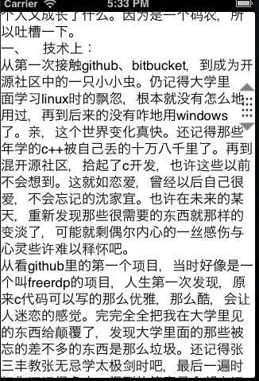
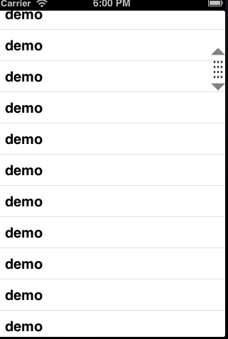

Tue 14 January 2014 by 向远
那条线
看不懂 或许不是遥远，
就是你我之间。
有着那一条线，
那么多路口，那么多转弯
看不见，或是许多想念，
就是你我之间。
有着那一条线，
有过些许，有过转念。
踮脚张望已旧的嚣张，
心却依旧彷徨。
那条线,
平行了过往。
看不懂 或许不是遥远，
就是你我之间。
有着那一条线，
那么多路口，那么多转弯
看不见，或是许多想念，
就是你我之间。
有着那一条线，
有过些许，有过转念。
踮脚张望已旧的嚣张，
心却依旧彷徨。
那条线,
平行了过往。
CGRect frame = self.view.bounds; NSLog(@"%f %f %f %f",frame.origin.x,frame.origin.y,frame.size.width,frame.size.height); self.view.bounds = [UIScreen mainScreen].bounds; NSLog(@"%f %f %f %f",frame.origin.x,frame.origin.y,frame.size.width,frame.size.height); [self.view addSubview:_tabBarController.view];
## 上面在ios7已有问题，不能再使用，可使用其他方式解决。
在一个叫作群群的应用中，有一个效果。某一个按钮进行接动（pan）时，就会动态的出来一个菜单。
然后发了一些时间作了一个实现。方案觉得还不怎地好。图片版权归群群应用所有。

在android平台中listview有一个thumb手机样式的拖动条，可以快速的拖动列表。
在ios上这个却是没有的。
在进行之前先来看一个场景，很多ios应用在看列表时，都会动态加载更多，然后随着列表项越来越多时。再到最上面时滚动就比较的费时，读一些内容软多的文字时也会碰到这种情况。
zaker上面看文章时也会一个快速拖动条，看新闻体验就比较的好。
这个手机样式图下图。
当然上图中的手指并不是图，是通过代码实现的。上面是table做的测试。下面是一个scrollview结果的图形。
一、下面先说说那个手指样式类图实现原理。
手指图是上下都是一个三角形，通过path画一个三角形，然后将图形context反转再画一个三角。
中间部分是一个pattern模式图形.
画三角
/**
* /\
** --
* | |
* \/
*/
CGRect bounds = self.bounds;
CGMutablePathRef pathref = CGPathCreateMutable();
CGContextSaveGState(ctx);
CGContextSetLineWidth(ctx, 2);
CGContextSetFillColorWithColor(ctx, [UIColor grayColor].CGColor);
CGPathMoveToPoint(pathref, NULL, bounds.origin.x + bounds.size.width / 2, 0.f);
CGPathAddLineToPoint(pathref, NULL, 0.f, kTriangleHeight);
CGPathAddLineToPoint(pathref, NULL, bounds.size.width, kTriangleHeight);
CGPathCloseSubpath(pathref);
CGContextAddPath(ctx, pathref);
CGContextDrawPath(ctx, kCGPathFill);
CGContextRestoreGState(ctx);
CGContextSaveGState(ctx);
CGContextTranslateCTM(ctx, 0.f, bounds.size.height);
CGContextScaleCTM(ctx, 1.f, -1);
CGContextSetLineWidth(ctx, 2);
CGContextSetFillColorWithColor(ctx, [UIColor grayColor].CGColor);
CGContextAddPath(ctx, pathref);
CGContextDrawPath(ctx, kCGPathFill);
CGContextRestoreGState(ctx);
CGPathRelease(pathref);
CGPatternRef CGPatternCreate ( void *info,//传递给画图回调函数的参数 CGRect bounds,//每一个单元格的大小，上图里面就是一个小圆 CGAffineTransform matrix,//变换矩阵 CGFloat xStep,//画完一个格后，x轴偏移 CGFloat yStep, CGPatternTiling tiling, bool isColored, const CGPatternCallbacks *callbacks//画图回调 );
2.完整代码
static const CGPatternCallbacks callbacks = { 0, &drawCellCallback, NULL };
CGPatternRef pattern = CGPatternCreate(0, CGRectMake(0.0, 0.0, 6, 6), CGAffineTransformIdentity, 5, 7, kCGPatternTilingConstantSpacing, true, &callbacks);
CGContextSetFillPattern(ctx, pattern, α);
CGPatternRelease(pattern);
CGContextFillRect(ctx, CGRectMake(2.f, kTriangleHeight + 4, bounds.size.width - 4, bounds.size.height - 2 * kTriangleHeight - 8));
CGContextRestoreGState(ctx);
二、然后就是实现触摸滚动了。
通常我们在设置一个view的背景为一个图片的时候，我们往往在上面加上一个imageview，然后在imageview中添加图片作为背景，
那如果app中要求的背景是一个草坪的图形，是不是我们就必须画一个和手机屏幕一样打的草坪的图片呢，其实没有必要，我们只需要一个小小的草坪的图片，然后让它在背景上面重复平铺就可以了。
首先，准备一个草坪的图片
然后我们就用这张图片在来填充这个屏幕的背景
UIImage *bgImage = [UIImage imageNamed:@"bg.png"]; self.view.backgroundColor = [UIColor colorWithPatternImage:bgImage];
然后运行app，查看屏幕中的背景变化：

UIImage *imageViewBg = [bgImage resizableImageWithCapInsets:UIEdgeInsetsMake(50, 50, 50, 50)];
用此方法可以实现。边框区域不会拉伸，保持原样。

关于上一篇写一个demo的，具地代码地址如下。有空再细细描述
我的github地址：https://github.com/xiangyuan/gles20demo.git
shown的告警，此时NSLog打印可以正常显示；在发布时NSLog被定义为空语句，不打印任何数据。
身边多了新的朋友、新的牵挂、新的责任，也让我们变得不知所挫。而且我相信人的一生说不定哪天就没有了，有很多的不平，很多的放不下在岁月中慢慢变淡。从而又进入了一个新的起点。 | 做一些没有做的事情就变得必要了，曾经自己觉得以后我们可以改变很多人，帮助很多人。岁月如河，随着时间的向前推移，那些让自己觉得是己任的东西太多被我们放下了。虽然我们不能改变世界，但我们可以改变自己。今天开始想做的事情一定去一件件的做完，就当作是死前的那种必要性的东西去看待。 | 没有人会在意你的不存在，因为或是没有被别人放在心上，或是被时间给冲淡。就像鲁迅一样有多少还记得这个模眉冷对千夫指，俯者甘为孺子牛的他，他就这样被我们给遗忘在历史的长河之中，就做些对他人有意义的事情吧，因为自己能改变的太少了。 | 今天开始好好对待身边的每一个人，there are so many things i can’t to let you know,because i love you 。 虽然你们不一定在乎我是谁，我要把一些事情给做到吧，因为哪天我会不在的，你们过的好就行。不求闻达于诸侯，但求放在心上。
CGImageRef topRef = mask.CGImage; CGImageRef maskImage = CGImageMaskCreate(CGImageGetWidth(topRef), CGImageGetHeight(topRef), CGImageGetBitsPerComponent(topRef), CGImageGetBitsPerPixel(topRef), CGImageGetBytesPerRow(topRef), CGImageGetDataProvider(topRef), CGImageGetDecode(topRef), false); // CGImageRef target = CGImageCreateWithMask(origin.CGImage,maskImage); // UIImage \* image = [UIImage imageWithCGImage:target]; //release CGImageRelease(maskImage);
注意：外部图片不能直接用来作为mask的图像。
2、色彩来做为Mask
3、context clip来实现Mask
UIImage \*background = [UIImage imageNamed:@"logo\_back"]; UIImage \*front = [UIImage imageNamed:@"profile"]; CGContextRef context = UIGraphicsGetCurrentContext(); CGContextSaveGState(context); CGContextSetBlendMode(context, kCGBlendModeDarken); CGRect size = CGRectMake(0.f, 0.f, background.size.width,background.size.height); [background drawAtPoint:CGPointMake(0.f, 0.f)]; CGContextTranslateCTM(context, 0.f, background.size.height); CGContextScaleCTM(context, 1.f, -1); CGContextDrawImage(context, size, front.CGImage); CGContextRestoreGState(context);
我们知道object-c与c++代码混合使用时，会将文件改为.mm的后缀。这个xcode在编译时就会使用clang和llvmg++来编译，一些标准备库文件就会正常识别。
found 编译错误。 | 解决办法如下：
#include #ifdef __cplusplus #include #include #include #include #include #include #endif #ifdef __OBJC__ #warning import some object c header file #endif
Page 1 / 5 »
This Blog generated by Pelican using Pujangga theme. All content on this blog, unless stated otherwise, is licensed under the CC BY-SA 4.0 International license.